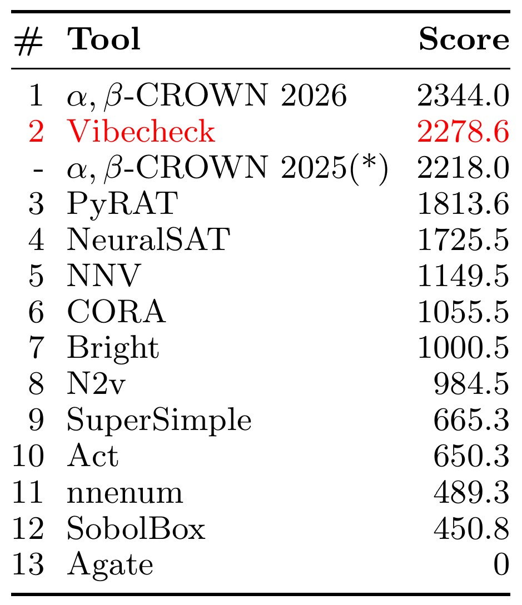

Verifying Neural Networks with Vibe Coding
Summary: I vibe coded a formal verification tool for neural networks from scratch in two months and about $3,000. It placed 2nd of 13 tools in VNN-COMP 2026.
This spring, with the seventh International Verification of Neural Networks Competition (VNN-COMP) approaching, I started working on a new verification tool. The reigning champion for the last five years has been the excellent α,β-CROWN verifier, a seven-year development effort that lists 25 contributors across 11 universities. I had a Claude Max subscription and a semester of teaching relief.
The Competition
VNN-COMP is the “premier international competition dedicated to evaluating and advancing the state-of-the-art in neural network verification.” Given a specific neural network and a specification (constraints over the inputs and outputs), the task is either to find an input that meets the output constraints, or to prove one does not exist. Benchmarks are organized into about two dozen categories that are submitted ahead of time, where each category typically contains tens of benchmark instances (specific network-specification pairs). The instances are randomly generated based on a seed, so that competitors cannot hard-code verification results and have to genuinely analyze the internals of each network.
In a typical year, about a dozen teams participate in VNN-COMP from across the globe, trying to verify the most benchmark instances within the time bounds on identical hardware. For each of the last five years, the winner has been α,β-CROWN. The tool was a multi-year effort by researchers from universities including UIUC, UCLA, and CMU, with dozens of peer-reviewed publications and funded by multiple National Science Foundation and industry grants. My entry was vibecheck, written entirely by Claude Code.
The Inspiration
In February 2026, Anthropic posted an article about the increasing effectiveness of vibe coding, describing how they coded a multi-platform C compiler from scratch in Rust. The two key aspects enabling their approach were: (1) the plethora of tests available for every aspect of C compilers, and (2) a correct oracle solution (gcc) whose source code could be inspected if the AI could not figure out how to correctly implement any specific feature.
Having been part of VNN-COMP since its early days, including helping to develop some of the original scoring infrastructure scripts, I found this pattern strongly reminiscent of the situation in neural network verification: (1) each year hundreds of benchmark instances are evaluated by tools, creating a plethora of diverse tests with correct verification results; (2) almost all the tools were open source, so that any missing algorithmic feature could be discovered through inspection or dynamic tracing.
Around the same time, Claude Code was shown to be capable of performing complex reasoning in advanced math. Donald Knuth had posted a note in early 2026 explaining how Claude Opus 4.6 was able to prove previously unproven properties about directed Hamiltonian cycles. The key technique that provided a jump in reasoning was a prompt to perform iterative thinking, developed by Filip Stappers. Somewhat like a Ralph loop, the prompt would ask the agent to explore candidate approaches and log the outcome in a file. Before beginning the next round of exploration, the file was read and reasoned about before proposing the next approach to try. If AI can prove theorems in advanced discrete mathematics, could it understand and improve neural network verification algorithms?
The Vibe Coding
Initially, the plan was to use AI to focus on one or two of what I thought were the more complex competition categories, places where I thought it would be interesting to experiment with ideas for research and algorithmic improvements. However, in a fairly short time, the tool was not only able to replicate the results of the other competitors, but also to verify instances none of them could solve in previous years. I was encouraged, and kept adding support for the other benchmark categories one by one. Eventually, every benchmark category in VNN-COMP 2026 was supported. Based on the way tools are evaluated, where unsupported categories receive a score of zero, supporting them all is essential to obtaining a high score in the competition.
While I had previous experience developing a neural network verification tool (nnenum), the amount of engineering needed to support the wide variety of networks in the competition is immense. This year had 30 benchmark categories, 3618 instances involving 55 different ONNX operators inside the networks that needed to be analyzed. There’s a reason top tools were built by dozens of researchers over many years. Could vibe coding really catch up in two months?
I had used AI-assisted coding in the past, but never for a project as big as this. Vibe coding typically struggles with structuring and organizing large codebases. Luckily, neural network verification resembles more of a toolkit of methods than a single unified algorithm, where each benchmark category selects a subset of approaches that is most applicable to the target network features and size. The code could be generally organized and optimized per benchmark category, with clear short-term targets. If the code got messy it was mostly confined to that benchmark category. If there were redundant implementations of algorithms in the tool, so be it.
The rough prompt at the start of each category went something like this: “Solve all benchmark instances that other tools were able to solve in category XYZ. If you can’t figure it out, start a Stappers-loop investigation with the goal of working through it. Still not working? Look at the algorithms used by other tools to solve the benchmark and integrate any key improvement. Read the latest research papers on the topic if you don’t understand their methods. Keep trying and don’t give up.” For some benchmark categories this was enough; for most there was still a bit of manual interaction trying to get the agent on track.
There did seem to be some bias in the agent steering towards doing exactly α,β-CROWN’s approach, rather than trying out new ideas in sufficient depth to show they’re not working. Perhaps this will be a barrier in future research, where any new creative approaches might be rejected early before they are sufficiently developed, as the reason they don’t compete is because they’re not the state-of-the-art method at LLM training time. Early prototypes can rarely beat mature methods, and AI is amazing at coming up with plausible-sounding but untrue explanations for failure.
Nonetheless, with a little prompting, vibe coding also allowed for extremely quick algorithmic implementation and evaluation. While most ideas didn’t pan out, the speed at which you could try things resulted in some genuinely new approaches. For example, vibecheck includes a new branch-and-bound algorithm, an optimal-step-size dual ascent approach, which was accelerated on a GPU to check millions of nodes per second. As far as I know, this is a completely new algorithm. I plan to investigate and document it more closely, and hopefully publish it soon. Checking dozens of new ideas would be completely impractical using traditional development, where each idea might be weeks to months of careful implementation and evaluation. AI accelerated not just the generation of source code, but the research process itself.
I didn’t sit at my computer working on this eight hours a day. Vibe coding is a fragmented development process, where I might provide some instructions and then check back in 15 minutes or an hour. This fragmented feedback can often lead to fragmented thinking, where I need to context switch back into my line of thought. It didn’t help when model context was limited and the context compaction operations seemed to lose important details. As an associate professor running a research lab and juggling responsibilities, I don’t have multi-hour blocks of time every day to work on a large software implementation; developing with AI actually fits much better into a fragmented schedule than traditional development.
I used Claude Code for development. Initially this was Claude Opus 4.6, then 4.7, and then eventually 4.8. Claude Fable 5 was also briefly available for a few days during development before the competition tool deadline at the end of June. Each new generation brought noticeable improvements to the tool effectiveness and the size of tasks that could be assigned to agents. The improvements to benchmarks reported at every model release are real and it was exciting to feel the reasoning improvements as they came. I don’t think we’re at an endpoint yet; at this point in history, vibe coding is as slow as it will ever be.
The Cost
Unlike the C compiler Anthropic developed, I did not rely on using a team of agents to work autonomously. I did not use extensive parallelization, and the only specialized skills used were the Stappers-loop skill and a dynamic trace skill that would instrument α,β-CROWN and output intermediate information on the verification process, like intermediate bounds on neuron inputs for comparison, or exact branch and bound split orders. But these were executed serially, and were more for context management than for speed.
The process started very hands-on where I wanted to see the source code being produced and take more of an active role in the tool architecture. This very quickly went away, resulting in a more unadulterated vibe coding experience, where all code runs and interactions were through the Claude Code terminal. It still required tens to hundreds of interactions per day and manual guiding and declaring when, for example, it was better to not solve a benchmark instance and move on, and when a key algorithm was missing and needed to be implemented. It was important to keep reminding Claude to produce evidence and measurements of what was being claimed.
The primary development was done using a Claude Max 20x membership, at $200 per month. Much more expensive was the hardware rented from Amazon Web Services (AWS) needed to evaluate the benchmarks. While some development can be done locally, the competition uses common hardware for a fair evaluation, a g5.8xlarge EC2 instance, with 32 vCPUs, 128 GB of RAM, and an NVIDIA A10G GPU with 24 GB of memory, which costs around $2.50 an hour (or about $1,800 a month if running 24/7). The cloud compute rental cost far exceeded the cost of the Claude Code subscription. Nonetheless, if you want to be competitive, some level of tuning is necessary on competition hardware, especially on the larger and more memory-intensive instances. Full evaluations on all benchmark instances take days and, when a problem is found and fixed, you may need to rerun to ensure nothing new broke. The cost for cloud computing was probably around $2,500, and the entire project cost about $3,000, ignoring any costs for my time.
The Correctness Argument
It is a bit ironic to work on a formal verification tool where correctness seems paramount using an untrustworthy technology like vibe coding. To develop correct implementations with traditional code, a large set of tests is the most common approach. For vibecheck, we used the VNN-COMP test instances from previous years for this purpose, where ground truth results were those provided by other tools.
In formal verification, the output is often a verification artifact, a machine-checkable product that can be independently verified. When a specification is violated in neural network verification, this is a counterexample, a specific input tensor that when executed on the network produces an output that unambiguously violates the constraints. vibecheck outputs counterexamples as well, so in these cases correctness is clear.
The other case, where no counterexample exists and the specification is unsatisfiable, is more difficult for neural network verification. Neural network tools are not supposed to output unsat unless they algorithmically prove no counterexample exists, but this policy requires trust in the authors and correctness in the implementation. Other verification domains like SAT solving can produce proof certificates in the no-counterexample case, which the associated competitions require. In neural network verification, however, the main barrier to the practical relevance of our research has been scalability and speed. If tools could only verify tiny networks with tens of neurons, they would be unfortunately irrelevant in practice.
For this reason, tools often use high-speed numerical methods like linear programming (LP) or mixed-integer linear programming (MILP) solvers rather than exact approaches, even if there could be numerical error. Even if these solvers were exact, the output of a neural network is inexact and can even change depending on the hardware used to execute it. The output of a network can be different depending on whether you run it on a GPU vs CPU, AMD vs Intel, or pytorch vs onnxruntime. Producing verification certificates for these cases is an active area of research. Recent updates to the specification standard (VNN-LIB 2.0) now specify numerical precision and the competition rules have been updated to move towards reducing issues from model nondeterminism by pinning package versions and specifying deterministic counterexample execution procedures.
Still, bugs are possible with vibe coding, as they are with hand-written code. An effective method that did discover such soundness issues when developing vibecheck was to add the capability to disable the counterexample search. By running only the unsat proof parts of the tool on verification instances where we knew a counterexample exists, the tool could be sanity-checked. Any proof of unsat in these cases would be a soundness bug, a red flag that needs to be debugged and fixed.
Another piece of evidence of soundness was comparing vibecheck’s results against the results of other tools. The goal given to Claude was to verify every benchmark instance that other tools could solve. But how do we know those other tools are correct?
This actually manifested as a real problem in one instance, where α,β-CROWN said an instance was unsat, but vibecheck was struggling to prove it. Doing dynamic tracing of the internal neuron bounds computed by their tool and comparing with vibecheck’s resulted in a bound disparity that wouldn’t budge. Finally, Claude declared it was not vibecheck’s fault; α,β-CROWN’s bound was too tight and it could even produce a witness to demonstrate it.
This was a serious claim. After further probing, Claude Code created a reproducible counterexample network and specification derived from the original one, where α,β-CROWN’s verdict flipped depending on whether counterexample-finding was enabled within their tool. AI detected a clear soundness bug that had been in the codebase of the top neural network verification tool since 2021. It then looked through α,β-CROWN’s 55,000-line source code and identified the root cause: two lines in the bounds propagation code that swapped padding width and height, which manifested when non-square feature maps were used in a memory-saving patches mode. This core bounds propagation method in α,β-CROWN is released as the open-source auto_LiRPA library developed by the same group. The same library has been adopted in other verification tools like NeuralSAT, the second-place tool from the last two years of the competition.
I reported the bug along with a patch, and the authors promptly confirmed the problem. In fact, they had internally discovered the issue and were planning to release a fix. They proposed the benchmark category where the bug manifested precisely to expose soundness issues of this kind. Working only against the released code, vibecheck had independently rediscovered the bug and pinpointed the root cause. If vibe coding were merely copying code from other tools, it would have silently inherited the bug instead.
The Results
Of the thirteen tools that participated, vibecheck received second place at VNN-COMP 2026. It had no penalties for incorrect results on any benchmark instances. α,β-CROWN once again took first place, although on a few benchmark categories vibecheck achieved a better score.

(*) UPDATE 9/21/2026: The 2026 benchmarks were released, so I could test how the 2025 version of α,β-CROWN would perform in this year's competition (removing any penalties caused by rule changes). While vibecheck outperformed the latest publically available version at competition time, the α,β-CROWN didn't sit on their hands all year and new developments (perhaps AI-assisted?) demonstrably improved their score.
The Future
Vibe coding is suspicious. The details of the code are out of sight. Things that were crystal clear in the past are obscured in the name of speed. And yet, when it works, its productivity is incredible. AI coding is as close to a silver bullet in software engineering as I’ve seen. How amazing would it be if the pace of scientific research could be amplified to the same extent as code output?
Did the process of developing vibecheck actually demonstrate that we can compress five years of community research effort into two months of vibe coding? Unambiguously no. Second place is not first place. Further, the VNN-COMP infrastructure and test cases, the algorithmic methods that were undoubtedly part of the LLM training data, and the publications and source code from hand-written high-performance tools (most notably α,β-CROWN) were all necessary ingredients to create vibecheck. The story is not AI versus humans. What vibe coding did was enable a speedrun down the research path to the state of the art, followed by fast interactive exploration from there. Whether AI can meaningfully push research on its own remains an unanswered question.
As an academic, it is hard not to draw parallels between AI-driven development and transitioning from being a graduate student to running a research group as a professor. When you perform research with a team of graduate students, you don’t micromanage every detail of their code. I like coding, and it’s probably what got me interested in Computer Science. But time is limited and out of necessity you adapt and learn to work at a higher level, to let go of following every detail of the work and become more of a manager instead. Instead of asking to look at the code, you discuss what the goals are. You look for evidence of results and incremental progress towards the goal. Working with AI agents feels the same in many ways. You demand evidence that things are working and look over that, not the actual code. And when it works, it’s certainly faster than doing things the old way.
As AI has become increasingly competent in entry-level tasks in software engineering, those positions have become harder to come by. Why hire testers when AI is faster and cheaper? The long-term ramifications of this are unknown. How do you get the skills to be a senior software developer without the learning experience in an entry-level role?
Scientific research, in Computer Science at least, might be in for a similar disruption. A typical task I used to assign a new graduate student would be to recreate an implementation based on a published research paper. They would struggle for a few weeks, sometimes succeed, but always learn something. Claude Code can now do this reliably with a copy of the publication in a single prompt. If AI can do many of the tasks of an entry-level graduate student, and we start to rely on it more and more, who will be sufficiently capable of doing cutting-edge research in the long run? How can a student learn in an environment where AI is initially so much more competent and efficient? How can a senior researcher stop their ability from deteriorating as AI replaces core aspects of what used to be their work?
Perhaps we can look for hope in other fields where automation already plays a large role. Airplane autopilot can do almost all of the work needed on an uneventful commercial flight. But full reliance could easily lead to skill atrophy in pilots. For this reason, the FAA encourages pilots to periodically fly the aircraft manually. SAFO 17007 states, “The Federal Aviation Administration (FAA) believes maintaining and improving the knowledge and skills needed for manual flight operations is necessary for safe flight operations.” Should we adopt a similar mindset, acknowledging that the knowledge and skills needed for manual coding are necessary for safe and effective vibe coding? We could all agree to intentionally slow down our work once in a while and track all the details manually, as painful as it is. Something like AI-free Fridays may be necessary to sustainably reap the rewards of AI-accelerated development and research.
The Author
Stanley Bak is an associate professor in the Computer Science department at Stony Brook University. All opinions expressed in this article are his own.